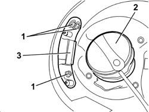
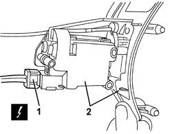
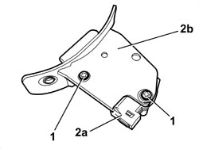

7025C40 FUEL FILLER FLAP CONTROL MOTOR - R+R AND CHECK LOCK SUPPLY LINE
- Path
- Procedures > 70 FITTINGS > 7025 COMPARTMENT COVERS > 7025C VARIOUS FLAPS (EXTERIOR) > 7025C40 FUEL FILLER FLAP CONTROL MOTOR - R+R AND CHECK LOCK SUPPLY LINE
- Kind
- repair procedure (removal / refitting; the operation number is the code)
- Applies to
- all engines; all production periods
- Interactive page
- https://sloeber94.github.io/elrnDB/alfa/159/en/#/939011223
Applies to: all engines; all production periods
 Removing
Removing
 Refitting
RefittingOp. 7040B20 BACK TRIM FOR LUGGAGE COMPARTMENT/LOAD PLATFORM - ARRANGE
Op. 7040B10 LOAD PLATFORM (LUGGAGE PLATFORM) TRIM - R+R
Op. 7025B66 BOOT COMPARTMENT SEAL - R+R
Op. 7040B22 LUGGAGE COMPARTMENT/LOAD PLATFORM MOULDING - R+R
Op. 7040B18 LOAD COMPARTMENT LOAD PLATFORM SIDE TRIM ONE LH OR RH - R.R
- Open the fuel filler cap access flap.
1. Undo the motor fixing bolts.
2. Undo the fuel filler.
3. Gently extract the motor support.

Applies to: all engines; all production periods
1. Disconnect the electrical connection.
Description | Component |
|---|---|
FUEL FLAP LOCK GEARED MOTOR |
2. Keep the motor and support.
- Retighten the fuel filler.

Applies to: all engines; all production periods
1. Undo the bolts.
2. Separate the motor (2a) from the support (2b).

Applies to: all engines; all production periods
Refitting
Removing- Check that the motor is not damaged.
- Position the motor on the support and tighten the bolts.
- Connect the electrical connection.
- Undo the fuel filler.
- Place the support in position.
- Tighten the bolts.
- Retighten the fuel filler.
- Close the fuel filler cap access flap.
Op. 7040B18 LOAD COMPARTMENT LOAD PLATFORM SIDE TRIM ONE LH OR RH - R.R
Op. 7040B22 LUGGAGE COMPARTMENT/LOAD PLATFORM MOULDING - R+R
Op. 7025B66 BOOT COMPARTMENT SEAL - R+R
Op. 7040B10 LOAD PLATFORM (LUGGAGE PLATFORM) TRIM - R+R
Op. 7040B20 BACK TRIM FOR LUGGAGE COMPARTMENT/LOAD PLATFORM - ARRANGE
Topics linked from this page (6)
- 7025B66 BOOT COMPARTMENT SEAL - R+R
- 7040B10 LOAD PLATFORM (LUGGAGE PLATFORM) TRIM - R+R
- 7040B18 LOAD COMPARTMENT LOAD PLATFORM SIDE TRIM ONE LH OR RH - R.R
- 7040B20 BACK TRIM FOR LUGGAGE COMPARTMENT/LOAD PLATFORM - ARRANGE
- 7040B22 LUGGAGE COMPARTMENT/LOAD PLATFORM MOULDING - R+R
- N058 FUEL FILLER FLAP LOCK GEARED MOTOR